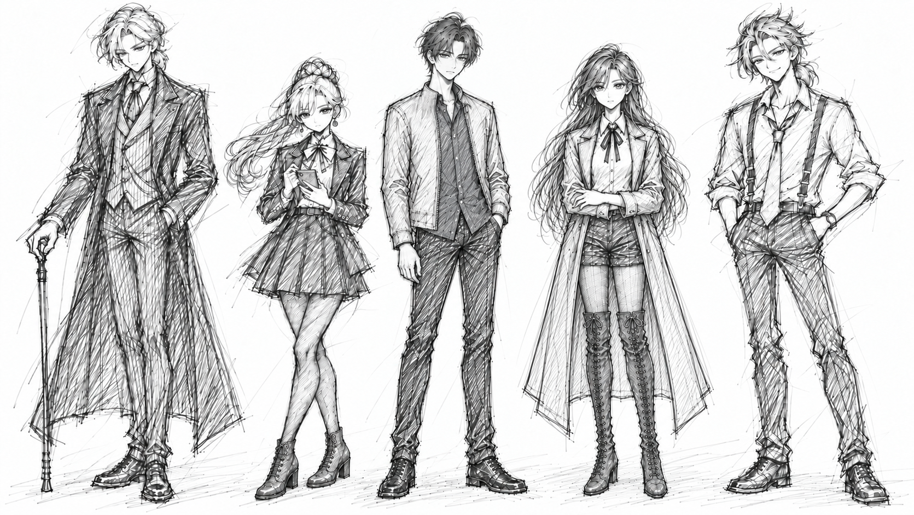
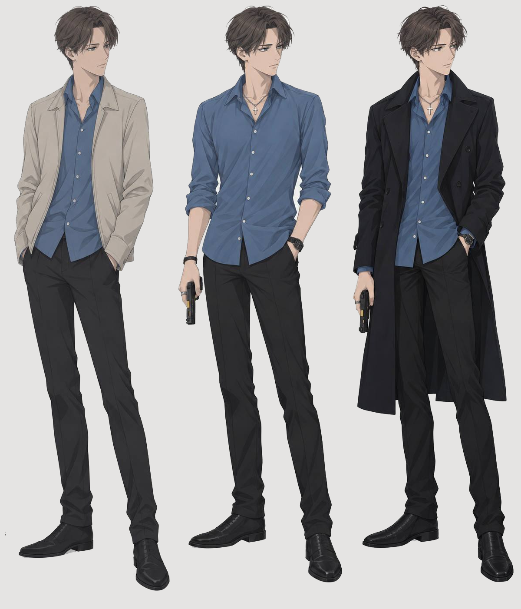
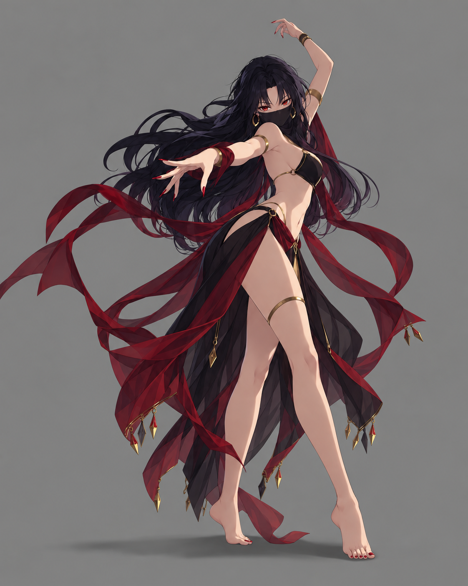
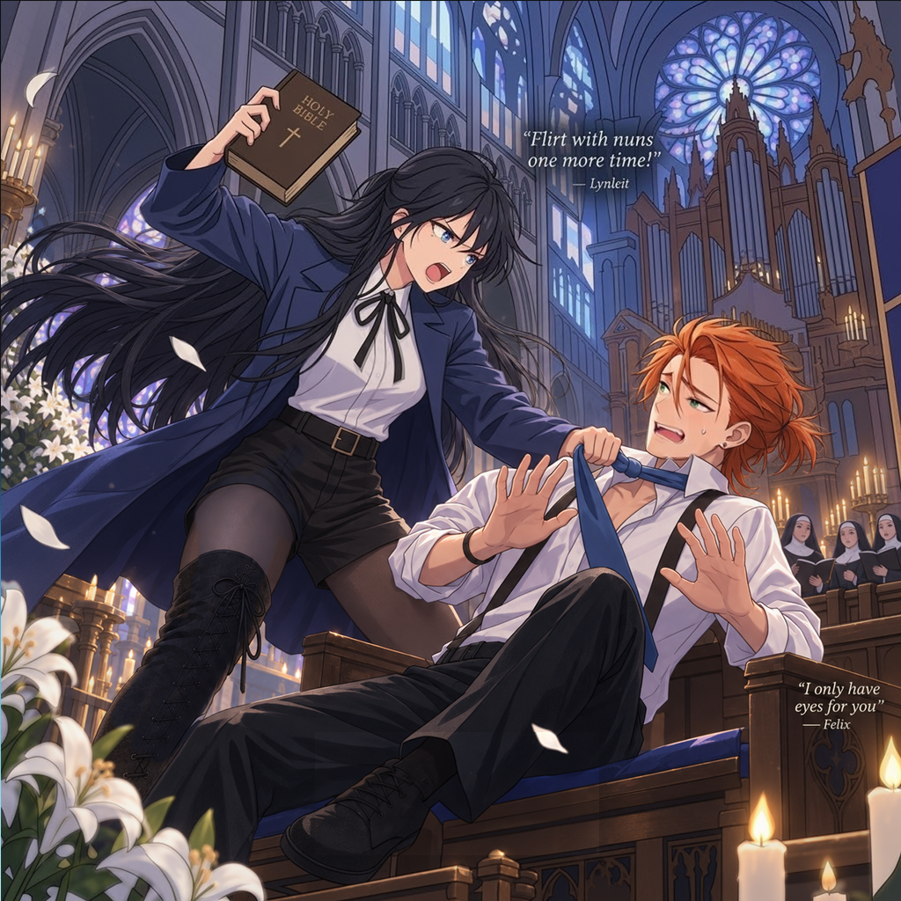
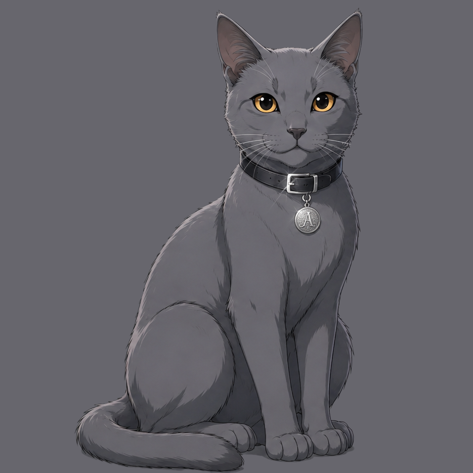
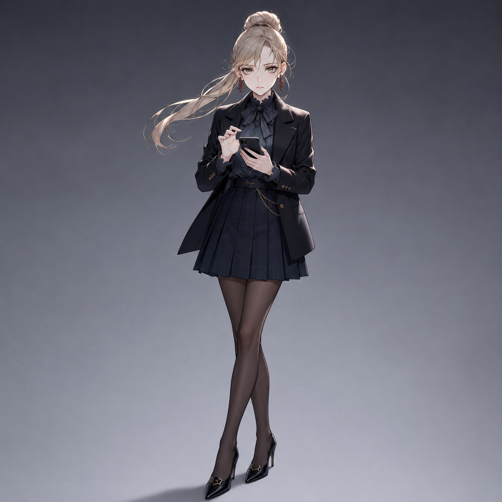
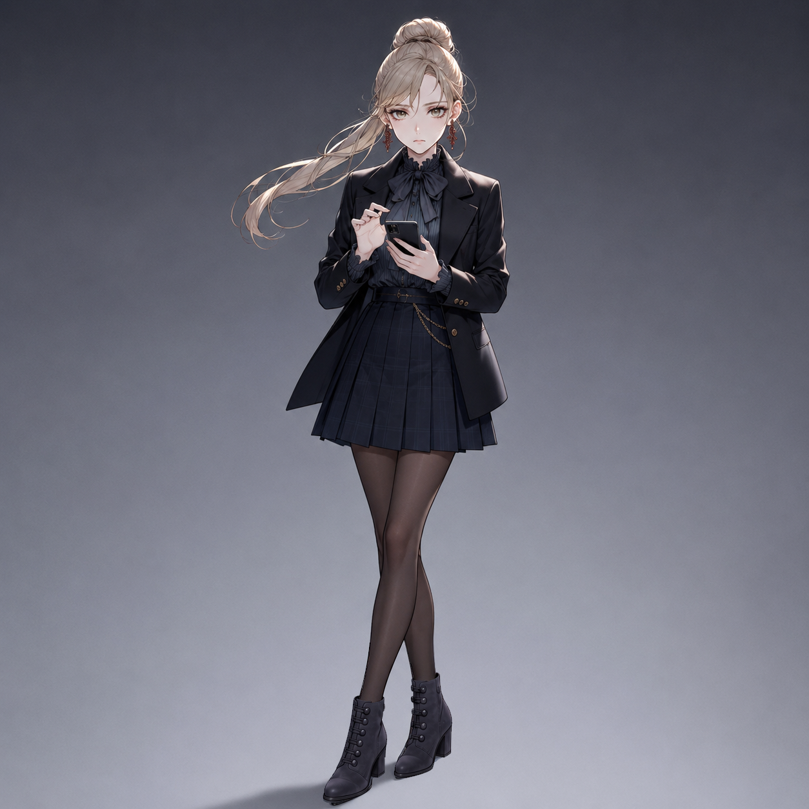
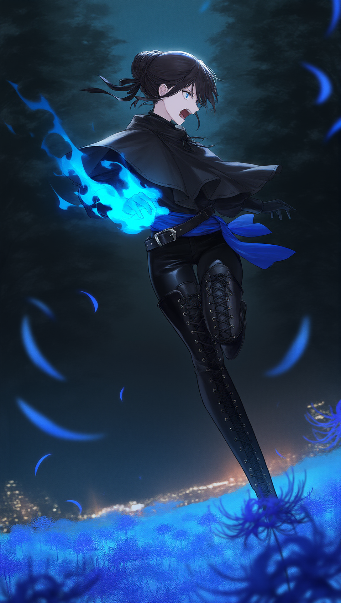
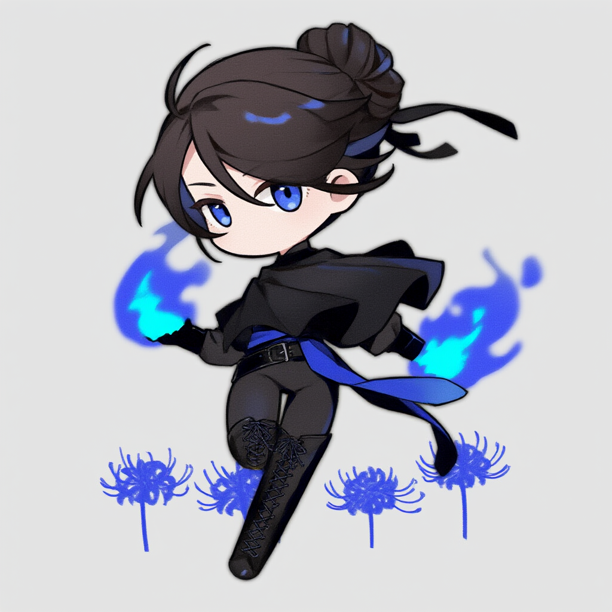
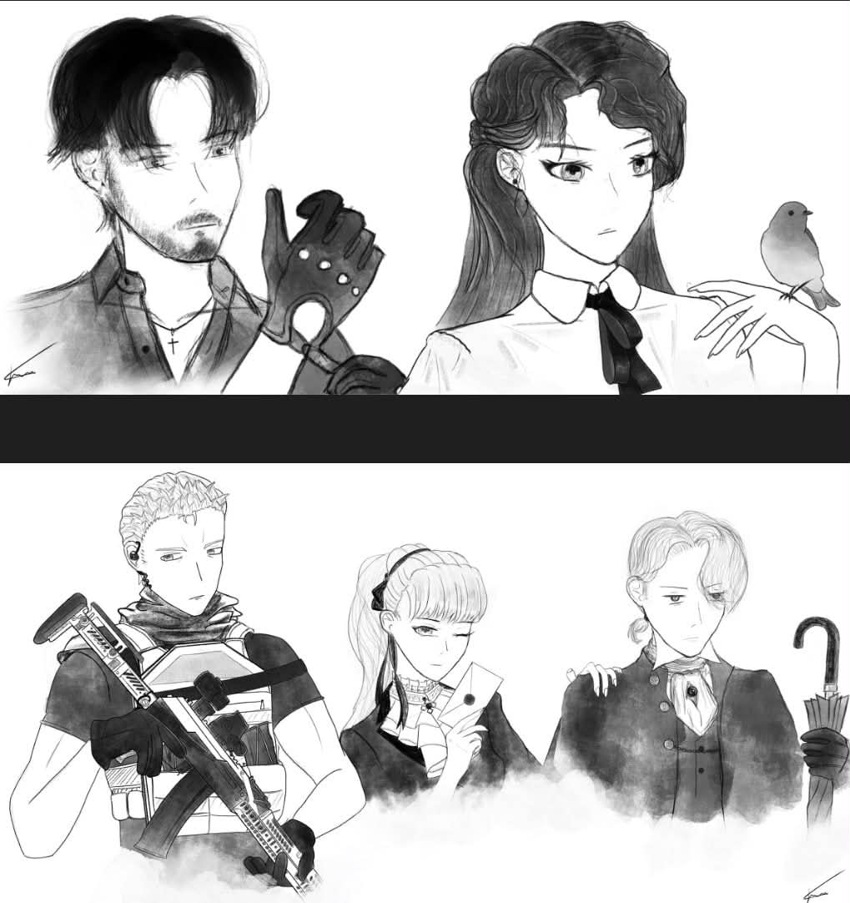

gallery
Media archive online
Character art and visual records
Visual archive
Gallery
Illustrations, production references, and scene-by-scene panel art.

Character lineup sketchDrake, Sherie, Kyrien, Lynleit and Felix
SKETCH · 01Kyrien: Close-up studiesConcept artwork · Three costume variants
KYR · CONCEPT
Kyrien: Standing studiesConcept artwork · Three costume variants
KYR · CONCEPT
AnimaAuthor's mascot · Artwork · Outside story canon
ANI · 01
Lynleit and Felix - illustration 01Character art
LYN + FEL · 01
Lynleit - key art 01Character art
LYN · 01
Ash - study 01Character art
ASH · 01
Ash - chibi 01Chibi
ASH · C01
Drake - study 01Character art
DRA · 01
Sherie - study 01Character art · v1 · Original heels
SHE · 01
Sherie - study 01Character art · v2 · Ankle boots
SHE · 01Sherie and Drake - night scene 01Character art
SHE + DRA · 01
Sherie - chibi 01Chibi
SHE · C01
Lynleit - chibi 01Chibi
LYN · C01
Lynleit - key art 02Character art
LYN · 02
Lynleit - key art 03Character art
LYN · 03
Lynleit - Arc 2 key art 01Character art · Arc 2
LYN · A2-01
Drake - chibi 01Chibi
DRA · C01
Felix - chibi 01Chibi
FEL · C01Felix - study 01Character art
FEL · 01
Felix - chibi 02Chibi
FEL · C02
Fionn - chibi 01Chibi
FIO · C01
Helena - chibi 01Chibi
HEL · C01
Heyk - chibi 01Chibi
HEY · C01
Hiyu - chibi 01Chibi
HIY · C01
Lynleit - chibi 02Chibi
LYN · C02
Lynleit - chibi 03Chibi
LYN · C03
Lynleit - chibi 04Chibi
LYN · C04
Lynleit - Arc 2 chibi 01Chibi · Arc 2
LYN · A2-C01
Lynleit - Arc 2 chibi 02Chibi · Arc 2
LYN · A2-C02
Myka - chibi 01Chibi
MYK · C01
Myka - chibi 02Chibi
MYK · C02
Natalia - chibi 01Chibi
NAT · C01
Natalia - chibi 02Chibi
NAT · C02
Reiner - chibi 01Chibi
REI · C01
Tien - chibi 01Chibi
TIE · C01
Yulia - chibi 01Chibi
YUL · C01
Earliest cast sketchThis piece of project history has no connection to the current characters, their designs, or story canon. Earliest cast sketch by Kiril Bekulov, dating to 2021 or earlier.
HISTORY · 2021 OR EARLIERNo matching artwork
Try another character, location, or turn off Chibi only.
Loading resources...
No production resources yet
Reference sheets, T-poses, development sketches, and 3D models will appear here with their related downloads.
Browse artworkNo preview image
Downloads
No downloadable files supplied.
Technical notes
Usage & credits
Loading panels...
No matching scenes
Try another search or character.
Browse sketches
Artwork
Open original